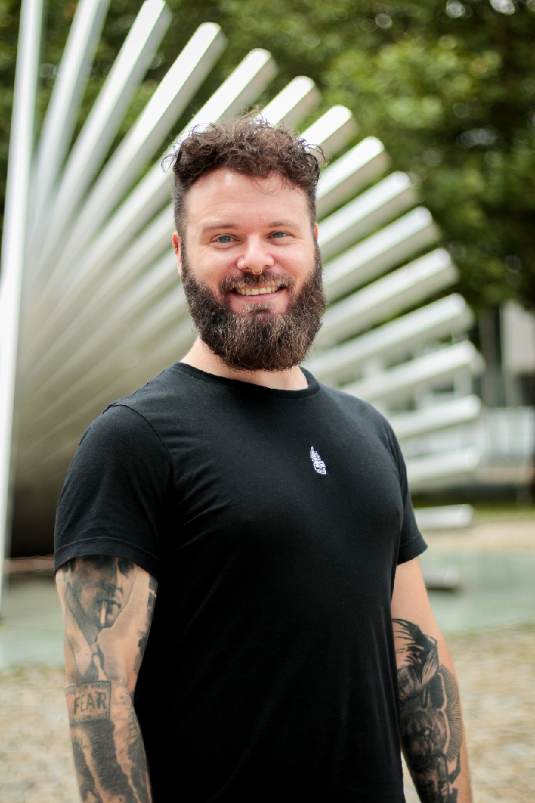
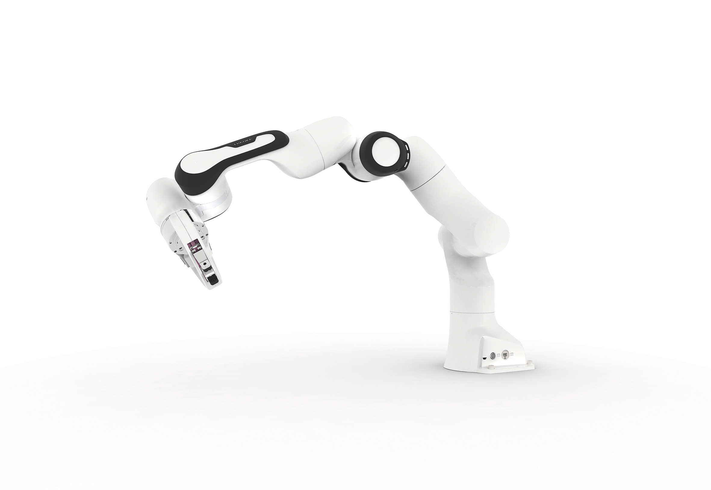
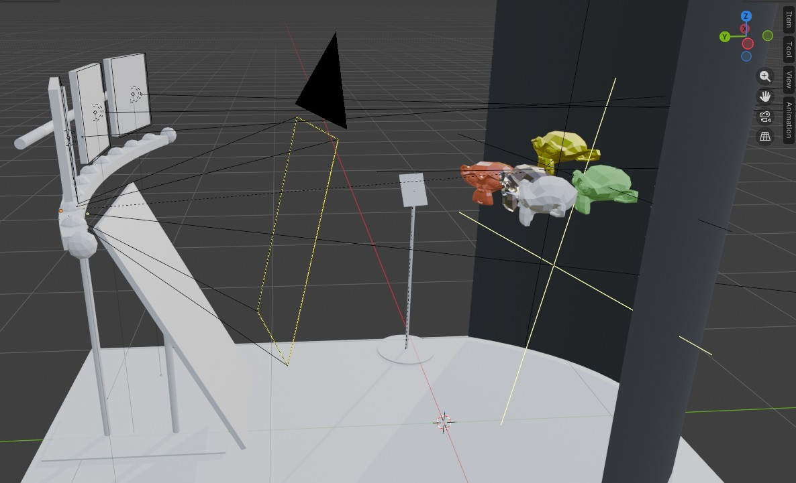
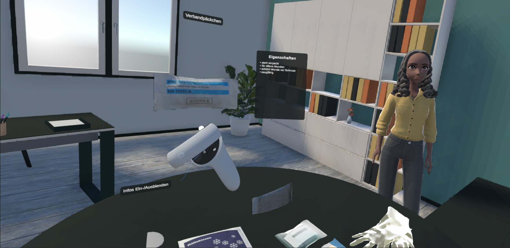
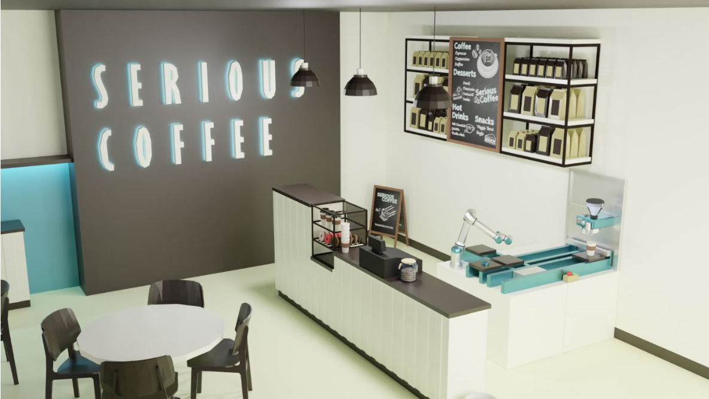
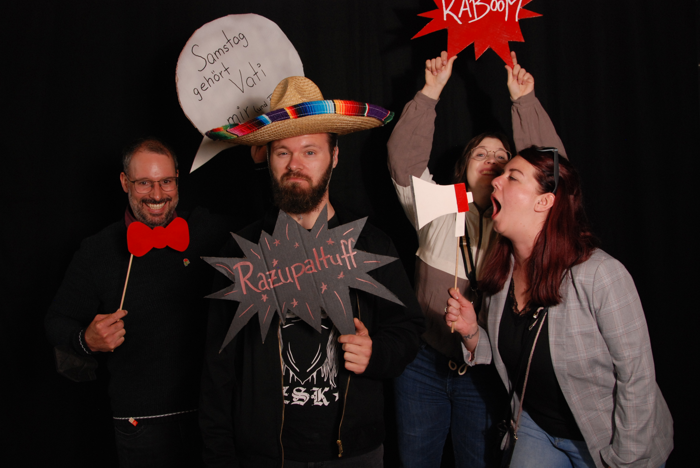

Master-Student an der HS Kempten. Fokus auf KI-Agenten, KI-gestützte Robotik und Game Engineering.
Master-Student Informatik mit Schwerpunkt KI und Computer Vision an der Hochschule Kempten.
Neben dem Studium unterstütze ich als Werkstudent bei AGCO Fendt KI-gestützte Projekte im Bereich Marketing.
Lebenslauf →Sprachen
ML / CV
Robotics / Embedded
Tools

Team-Projekt im Rahmen von RoboCup@Work: Ein Franka Panda Roboterarm räumt selbstständig Supermarktregale aus und sortiert Produkte nach Mindesthaltbarkeitsdatum. Sprachsteuerung via LLM, High-Level-Planung mit Behaviour Trees, Ausführung über ROS2.

Multi-Kamera-Setup auf Raspberry Pi Basis. Synchronisiertes Auslösen mehrerer Kameras, automatische Bildverarbeitung und lokale Vorschau mit Bullet-Time-Effekt.
Tower-Defence-Game entwickelt in Unity als privates Indie-Projekt. Fokus auf Gameplay-Loop und Level-Design.

Bachelorarbeit: Planung und Entwicklung eines VR-basierten Lernspiels für Schüler*innen der Frank Hirschvogel Stiftung — Erste-Hilfe-Kompetenz spielerisch vermittelt auf der Meta Quest.

Game-Based-Learning Prototyp für das IPI Sonthofen — SPS-Programmierlogik spielerisch vermittelt über eine Café-Simulation mit virtueller Transferanlage.

Erste Version einer Raspberry Pi Fotobox mit direktem Cloud-Upload.
Kurzfilm aus dem ersten Semester (2020) — komplett modelliert, geriggt und animiert in Blender.
YouTube →